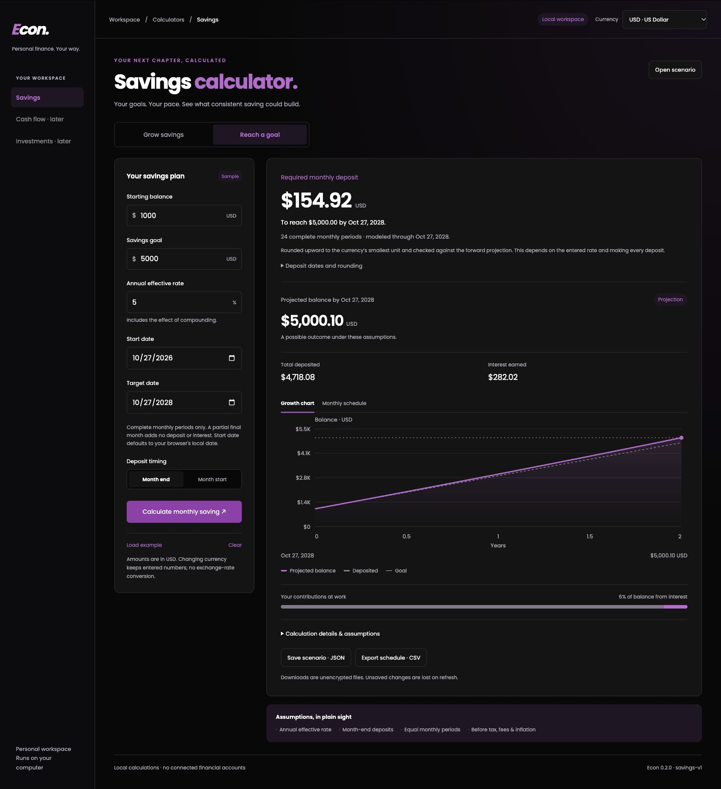
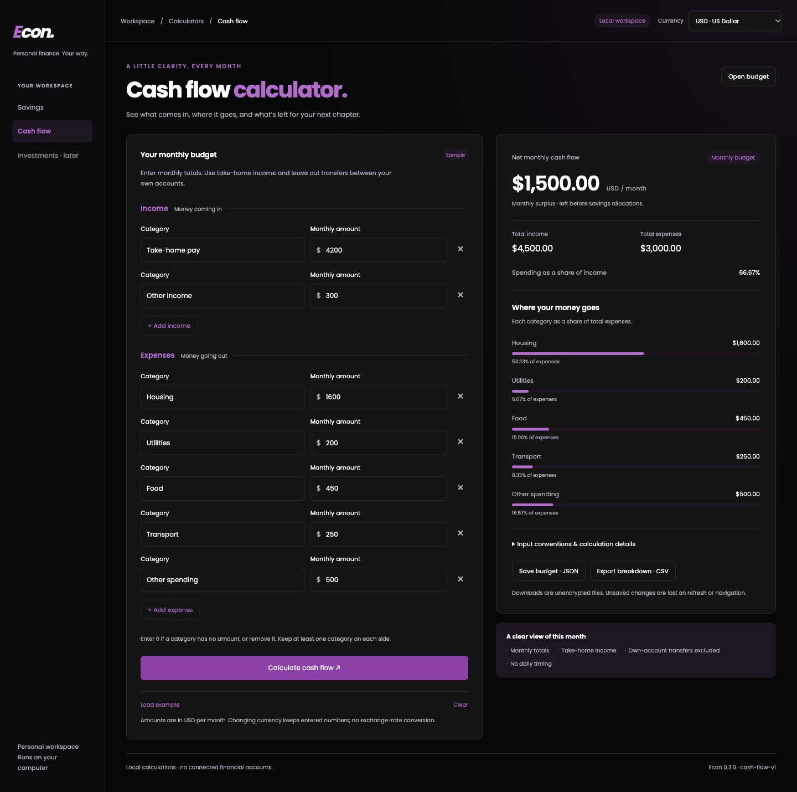
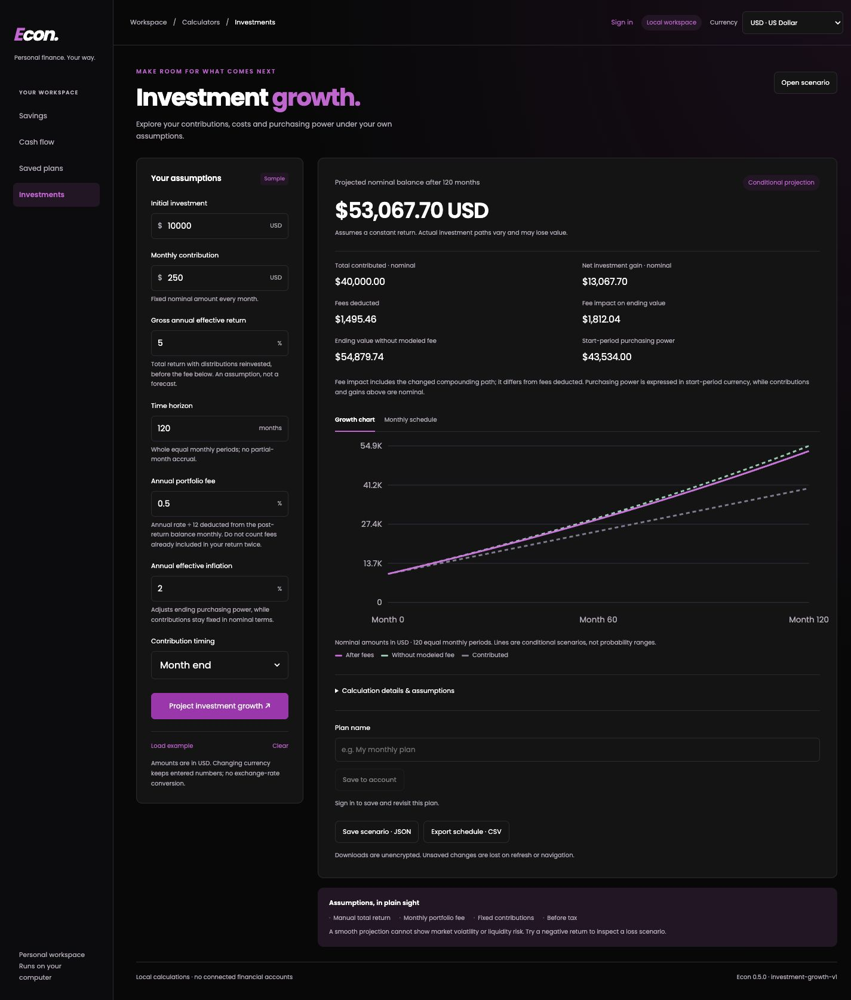

Now
Implemented locallyPersonal finance tools
Savings, goals, cash flow, investment growth and encrypted local saved plans.
An evolving project · v__VERSION__
A personal finance app with clear assumptions, inspectable calculations, and tests that connect back to the requirements.
01 / Working software
Savings, target-date goals, cash flow and investment growth share one Studio UI. These previews use labeled synthetic data.
Choose a target date. Python finds the smallest monthly deposit that reaches the modeled target, rounded upward to the currency’s minor unit.
Precomputed example · month-end deposits · conditional on the entered rate. Partial final months are excluded.
Read the goal specification ↗
Starting capital and fixed monthly deposits grow under an explicit annual-effective rate convention. Timing, currency precision, and rounding are part of the contract.
Precomputed example · month-end deposits · before tax, fees and inflation. An independent cash-flow sum checks the result.
Inspect the model and references ↗SAV-M01 / Annual effective rate
Convert the annual rate to an effective monthly rate.
Accrue interest, then add a month-end contribution.
Editable monthly categories make income, spending, and the surplus or shortfall visible together. Transfers between your own accounts are excluded.
Precomputed example · monthly totals · no daily cash timing. Zero income leaves the spending ratio undefined.
Read the cash flow contract ↗
Manual total-return assumptions, fixed contributions, monthly portfolio fees and inflation share an inspectable Python contract.
Precomputed synthetic example · month-end contributions · before tax. Fees deducted: $1,495.46; fee impact on ending value: $1,812.04. Start-period purchasing power: $43,534.00. Constant assumptions, not a market forecast.
Read the investment contract ↗
A showcase, with source you can run. GitHub Pages hosts this static walkthrough. The Python app provides the live calculations, sign-in and encrypted saved plans when run locally. This page collects no calculator inputs.
Run the app ↗02 / Specification-driven development
The spec owns the behavior. The implementation stays small enough to check against it.
Inputs, units, timing, valid ranges, rounding, edge cases, and numbered acceptance criteria.
Product specification ↗Pure Python calculations stay separate from the web UI, file adapters, and account storage.
Architecture decisions ↗Cash-flow sums, exact fractions, integer currency units, boundaries, and useful invariants.
Read the tests ↗Report actual verification, unresolved limits, model versions, and the next milestone.
Milestone evidence ↗03 / Inspect the work
Requirements, numerical references and security boundaries have specific places in the repository.
Follow an acceptance criterion through its model, implementation and verification.
Traceability map ↗SQLite, Argon2id credentials, authenticated encryption, ownership checks and session lifecycle.
Account specification ↗Private runtime data stays outside Git and Pages. Backend deployment has its own pending contract.
Deployment boundary ↗Passing checks are evidence within the defined test scope. They do not establish investment performance, exhaustive coverage or an independent security audit.
04 / Still being built
Investment growth is implemented. Allocation, holdings analysis and prediction markets follow through separate reviewed contracts.
Savings, goals, cash flow, investment growth and encrypted local saved plans.
Portfolio allocation/rebalancing next, then holdings/historical returns, with explicit data and cost conventions.
Implied probabilities, event resolution, fees, liquidity, and evidence provenance.
Chronological evaluation for ML; correctness parity and profiling before C/C++.
Built to be inspected. Designed to keep evolving.